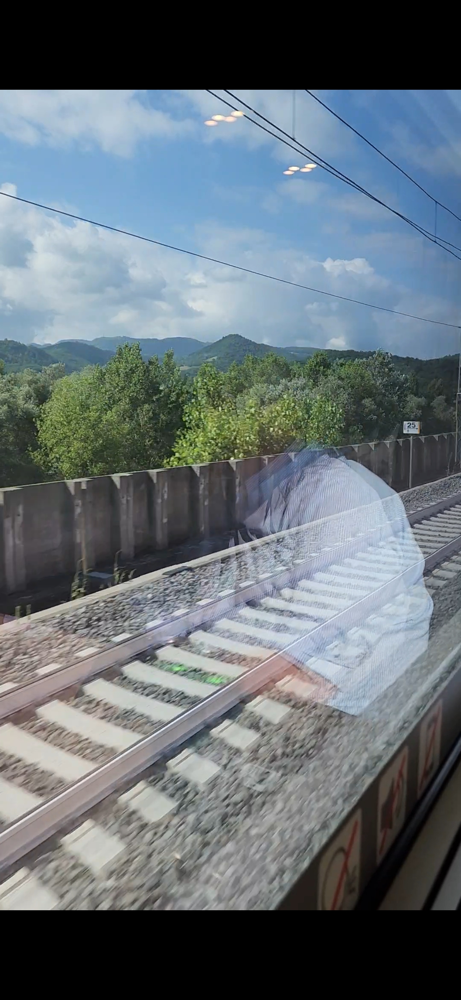
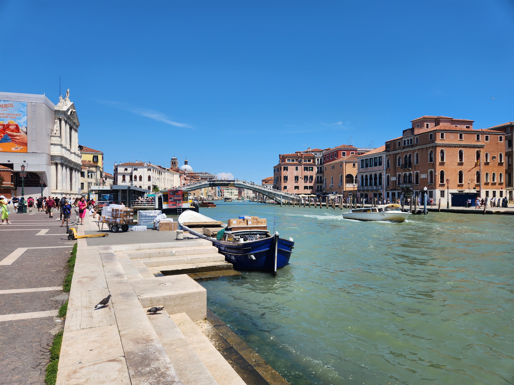
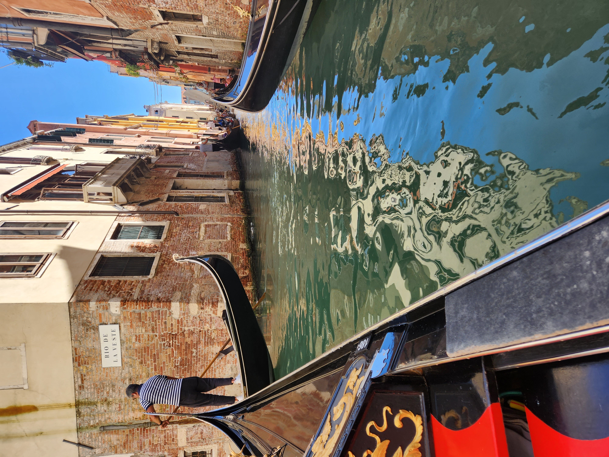
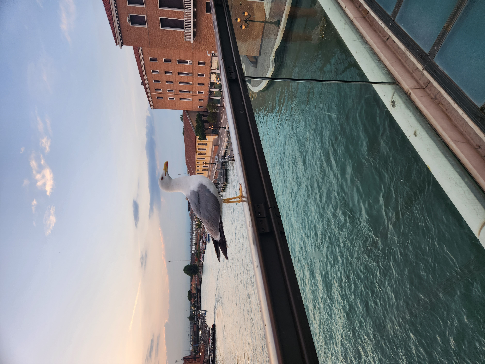
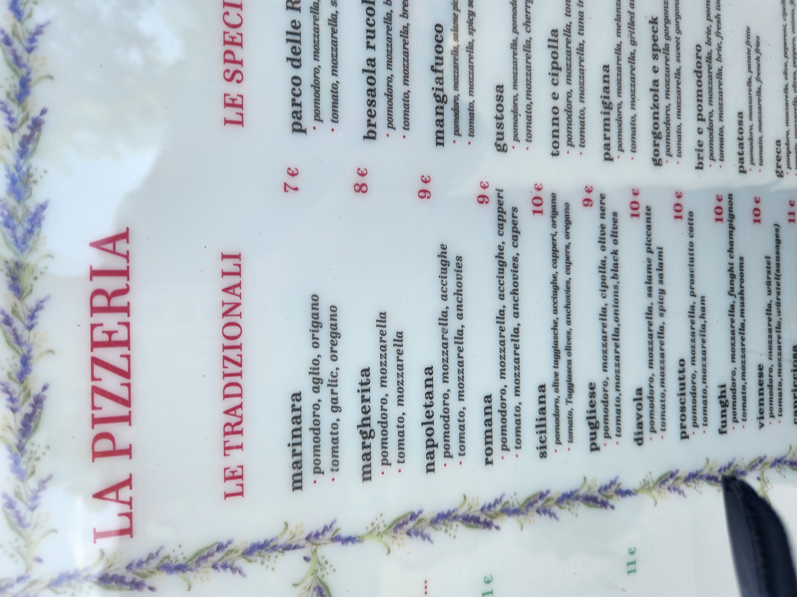
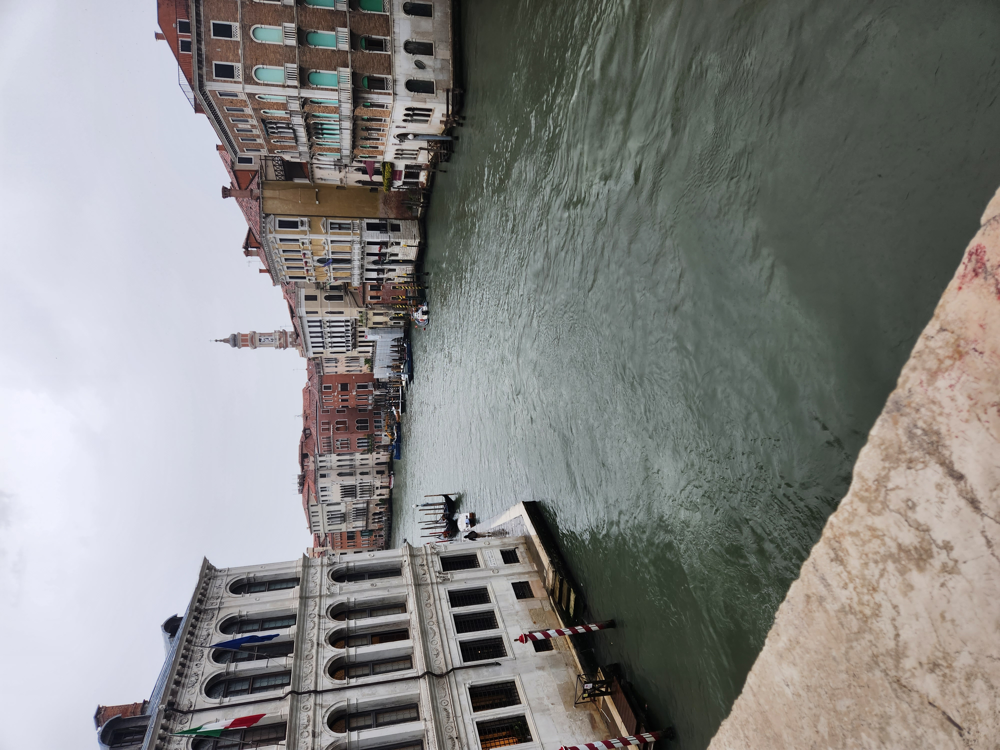
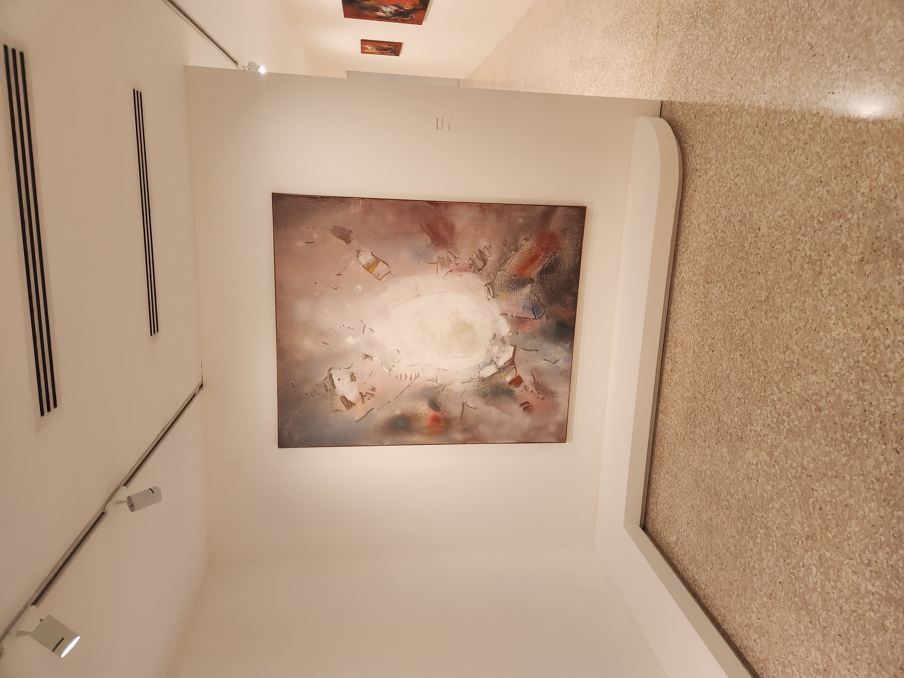

- 나폴리
- 로마
- 피렌체
- 베네치아
- 밀라노
7/5
베네치아

아침에 일어나서 아침을 먹고 기차를 타고 베니치아로 이동했다.
숙소에 도착해서 짐을 풀고, 점심을 먹었다.

산마르크 광장을 갔다. 풍경이 정말 예뻤다. 바다도 정말 예뻤다.

베니치아 곳곳을 곤돌라를 타고 운하를 통해 돌아다니는 투어가 있었는데, 재미있었다.

탄식의 다리도 가보았다.

저녁을 먹고 숙소로 돌아와서 잠을 잤다.
7/6
 아침에 일어나서 버스를 타고 베네치아 섬으로 들어간 다음에 우선 두칼레 궁전을 갔다.
아침에 일어나서 버스를 타고 베네치아 섬으로 들어간 다음에 우선 두칼레 궁전을 갔다.
 그리고 산마르코 종탑을 갔다.
그리고 산마르코 종탑을 갔다.

점심을 먹고, 리알토 다리를 갔다.

그리고 페기 구겐하임 미술관을 갔다
베네치아 시계탑을 보고, 저녁을 먹을 후, 숙소로 돌아와서 잠을 잤다.